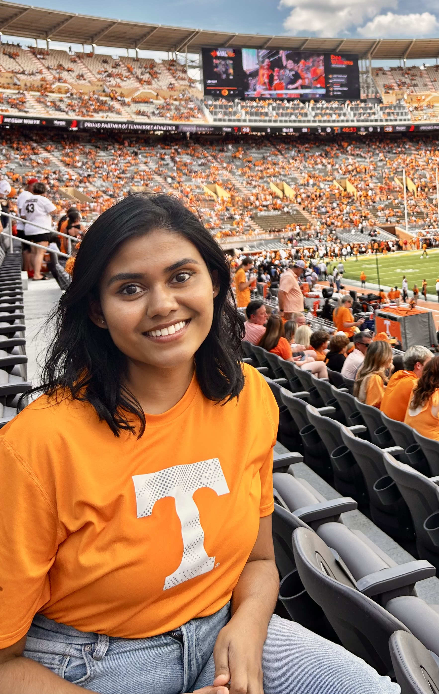
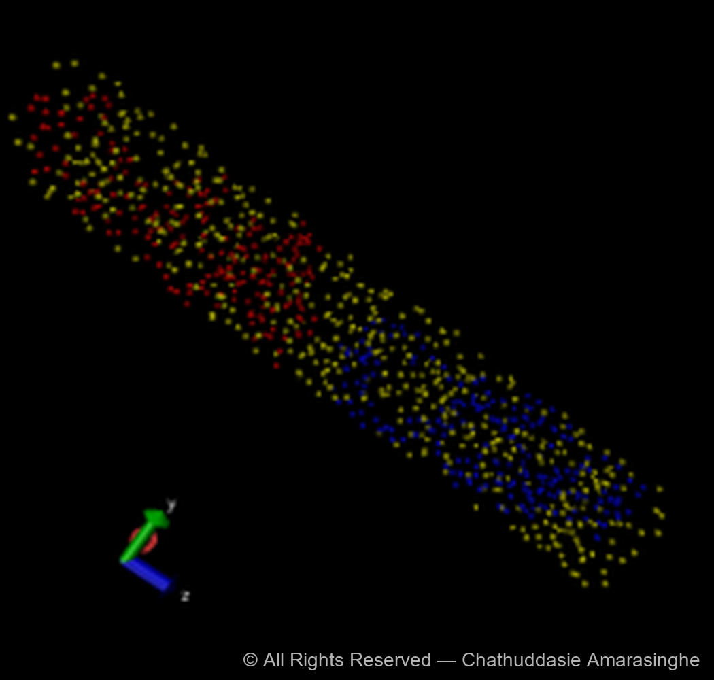
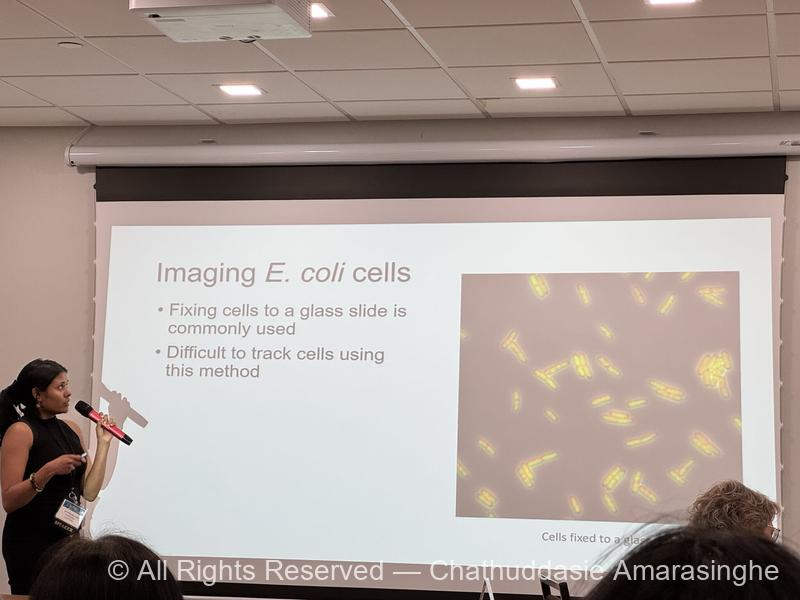

I'm a dedicated PhD candidate in Biophysics, bringing 7+ years of experience in life sciences research, advanced imaging, and specialized instrumentation. Explore what I do below, and feel free to connect with me!

Ph.D. in Physics (Biophysics Concentration)Fall 2020 – May 2026 (Expected) University of Tennessee, Knoxville, TN | GPA: 3.82/4.00
Bachelor of Science (Honors) in Physics2014 – 2018 University of Peradeniya, Peradeniya, Sri Lanka
Advanced Diploma in Management Accounting2013 – 2014 Chartered Institute of Management Accountants (CIMA)
Graduate Research Assistant – UT Knoxville
May 2021 – Present
Led research on chromosome organization and intracellular dynamics in Escherichia coli, combining imaging, genetic engineering, and computational modeling.
Independently authored funding proposals and collaborated with industry vendors to procure specialized optical components and lab equipment.
Designed and fabricated microfluidic devices using electron-beam lithography (JEOL 9300FS 100kV Electron Beam Lithography System), photolithography (Suss MicroTech Contact Aligner), and RIE (Oxford Plasmalab System 100 Reactive Ion Etcher) at Center for Nanophase Materials Sciences (CNMS), Oak Ridge National Laboratory (ORNL). New designs increased cell capture by 140%.
Conducted 60+ high-throughput time-lapse fluorescence microscopy experiments using Nikon Ti-E inverted epifluorescence microscope, enhancing temporal resolution from 3 minutes to 6 seconds through custom laser integration.
Developed deep learning image analysis tools (U-Net CNN) in Python/MATLAB, achieving 93% accuracy in cell segmentation.
Analyzed experimental data and developed PDE and MD models (LAMMPS) for cellular dynamics, enabling quantitative validation of findings.
Recruited and trained 6+ graduate and undergraduate students in experimental techniques and data analysis.
Research Assistant – UT Knoxville
June 2020 – Aug 2020
Simulated chromosome segregation in E. coli using molecular dynamics (ESPResSo) on the university’s high-performance computing (HPC) cluster.

Snapshot from our molecular dynamics simulation showing two segregating chromosomes (red and blue) in the presence of macromolecular crowding (yellow).
Undergraduate Research – University of Peradeniya
March 2018 – May 2019
Developed biodegradable and antimicrobial packaging material. This involved synthesizing CaO nanoparticles and incorporating them into corn starch-based polymer films.
Characterized film tensile strength and antimicrobial properties.
Graduate Teaching Assistant – UT Knoxville
August 2020 – May 2021
Physics 421 (Modern Optics Lab): Topics include transmission of light in uniform, isotropic media, reflection and transmission at interfaces, mathematics of wave motion and interference effects, rudiments of Fourier optics and holography.
Assisted the supervising faculty member by grading assignments and examinations.
Ensured the safe use of lasers during laboratory sessions.
Assisted students by troubleshooting experimental setups.
Evaluated student lab reports.
Demonstration of optical alignment principles in the Physics 421 Modern Optics Lab.
Physics 221 (Elements of Physics I Lab): Basic physical principles and applications required in pre-medical, pre-pharmacy, and pre-veterinary programs. Topics include mechanics, heat, and wave motion.
Conducted online recitations via Zoom to support student learning.
Troubleshot experimental setups during laboratory sessions.
Graded quizzes and lab reports.
Graduate Teaching Assistant – UNC Charlotte
August 2019 – May 2020
Chemistry 1251L (General Chemistry I Lab): Topics include quantitative measurements, solution preparation, chemical reactions and stoichiometry, thermochemical processes, and properties of materials.
Guided and evaluated undergraduate students on the safe execution of laboratory experiments, including proper handling and disposal of chemicals.
Adapted quickly to COVID-19 lockdowns by transitioning to online teaching, preparing engaging video lessons to maintain continuity and student engagement.
Teaching Assistant – University of Peradeniya
January 2019 – July 2019
Physics 481 (Advanced Physics Laboratory III):
Demonstrated and supervised 400-level undergraduate laboratory sessions focused on the Mechanical Testing Machine.
Physics 361 (Biophysics):
Prepared comprehensive tutorial materials and marking schemes, and evaluated student submissions for this upper-division course.
Physics 280 (General Physics Laboratory I):
Demonstrated and supervised 200-level undergraduate laboratory sessions for over 100 students.
Key duties included compiling laboratory handouts, preparing and grading prelab quizzes, and evaluating student lab reports.
The role of active mRNA–ribosome dynamics and closing constriction in daughter chromosome separation in E. coli.Chathuddasie Amarasinghe, Mu-Hung Chang, Jaana Männik, Scott T. Retterer, Maxim O. Lavrentovich, Jaan Männik.Proceedings of the National Academy of Sciences, 122(45)(2025)[Article Link]
The role of macromolecular crowders in the formation and compaction of the E. coli nucleoid.Jaan Männik, Jaana Männik, Chathuddasie Amarasinghe, Mu-Hung Chang, Maxim O. Lavrentovich.EcoSal Plus, Ahead of Print(2025)[Article Link]
Determining the rate-limiting processes for cell division in E. coli.Jaana Männik, Prathitha Kar, Chathuddasie Amarasinghe, Ariel Amir, Jaan Männik.Nature Communications, 15(2024)[Article Link]
Oral Presentations:
Center for Nanophase Materials Sciences User Meeting 2025

Presenting the latest findings on ribosomal dynamics and nucleoid separation in E. coli at the CNMS User Meeting 2025.
Organizer & Facilitator: Biophysics Journal Club, UT Knoxville
Mar 2024 – Present
Initiated and led the Biophysics Journal Club at UT Knoxville to promote interdisciplinary research discussions among graduate and undergraduate students.
Facilitated sessions by mediating discussions and encouraging critical analysis of current biophysics literature.
Graduate Student Recruitment: Department of Physics, UT Knoxville
2024 - 2025
Presented research posters during departmental recruitment events to support prospective graduate student engagement, successfully recruiting two incoming graduate students each year.
Undergraduate Research Mentorship: EUReCA
Spring 2025
Mentored an undergraduate researcher presenting at Exhibition of Undergraduate Research and Creative Achievement (EUReCA), a campus-wide research showcase at the University of Tennessee, Knoxville.
Science Outreach Volunteer: GSSE Summer Program
May 2022 – Present
Conducted engaging, hands-on learning sessions for high school students from the Governor’s School for the Sciences and Engineering (GSSE).
Fostered interest in microscopy and experimental design via interactive sessions showcasing live-cell imaging with microfluidic devices using the Nikon Ti-E confocal microscope.
Initiator & Treasurer: Sri Lankan Students' Association
2023 - 2024
Authored the organization's constitution, independently designed its official logo, and established the association's structure.
Initiated and led the first fundraising campaign, generating over $1500 in funds to support the inaugural event that attracted over 100 attendees.
Science Outreach: Department of Physics, University of Peradeniya
Spring 2019
Demonstrated experimental science sessions for Advanced Level students (pre-university) at the Science Education Resource Centre.
Focus was on engaging students with practical applications of physics concepts.
Education Volunteer: Physical Society, University of Peradeniya
2017 – 2018
Volunteered with the Physical Society to teach comprehensive lessons in Science, Mathematics, and English to students from rural schools.
Program focused on promoting science education and literacy among underserved communities.
I'm happiest when I'm moving, so you'll usually find me staying active outdoors. Hiking is always a favorite. Having grown up an islander in Sri Lanka, I'm genuinely down for anything involving the water, like swimming, kayaking, jet skiing, and other water sports.
Contact Me
Please feel free to connect for inquiries regarding my research, potential career opportunities, and collaborations.